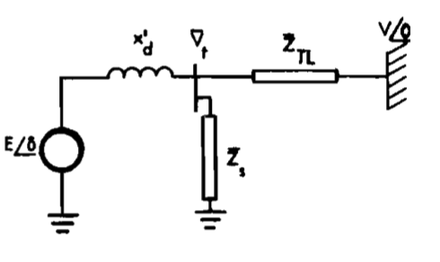
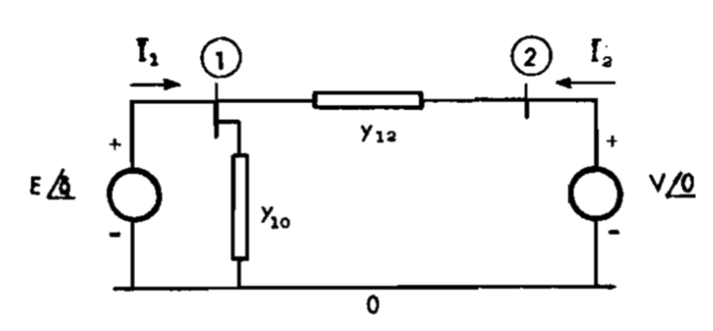
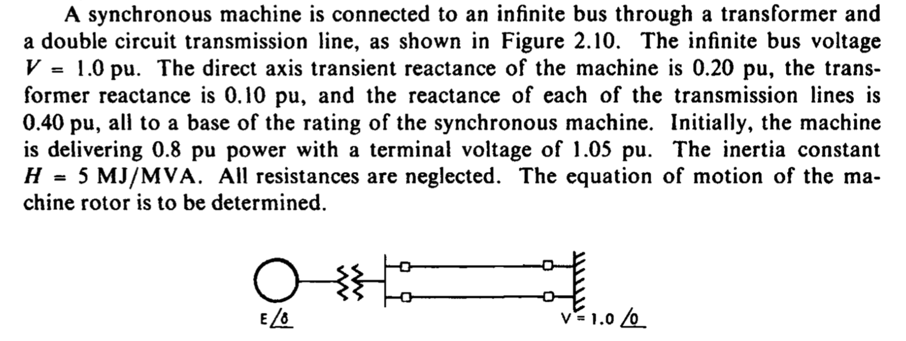
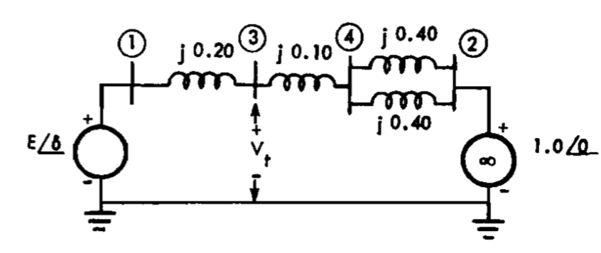
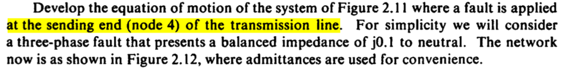
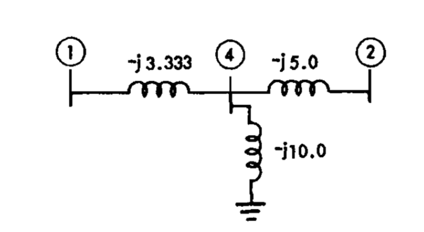
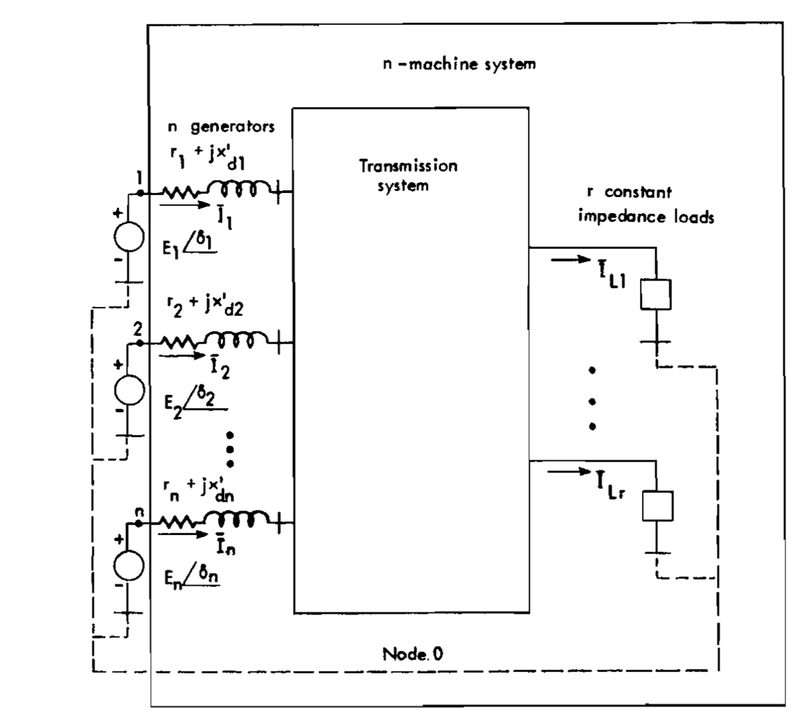
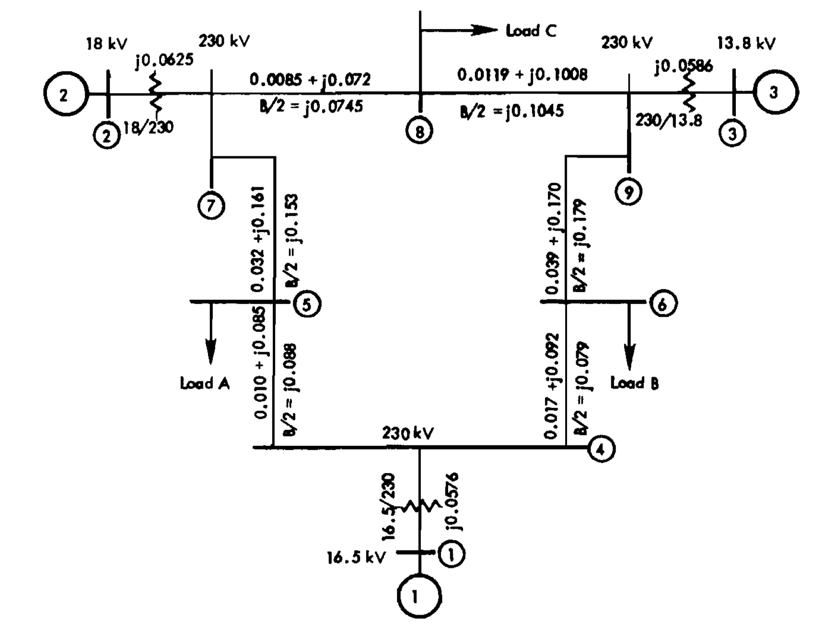

Introduction
A stable power system is one in which the synchronous machines, when perturbed, will
- Either return to their original state if there is no net change of power, or
- Will acquire a new state asymptotically without losing synchronism.
One convenient quantity is the machine rotor angle measured with respect to a synchronously rotating reference. The angle difference between any two machines should not increases indefinitely and the oscillatory transient should be sufficiently damped.
The main reference of this post is the book “Power System Control and Stability” by P. M. Anderson and A. A. Fouad.
Swing Equation
The commonly used swing equation in per unit is written as \[ (2H/w_R)\ddot{\delta} = (2H/w_R)\dot{w} = T_{a} \] where \(H\) is the a constant related to the inertia with unit \(s\), \(w\) is the electrical angular velocity in \(rad/s\), \(\delta\) is the electrical angle in \(rad\), \(w_R\) is the base angular speed, and \(T_a\) is the accelerating torque in per unit.
We can also have the following definitions:
\[ H = W_k/S_{B3} \] where \(W_k\) is the kinetic energy of the rotating masses, e.g. \(W_k = (1/2)Jw_m^2\), \(J\) is the momentum of inertia in \(kg\cdot m^2\) and \(w_m\) is the mechanical angular speed, and \(S_{B3}\) is the base three-phase power. Note that because \(H\) is a function of the mechanical angular speed, it is actually not a constant. But we usually assume it is a constant for simplicity.
The accelerating torque is the subtraction between the mechanical torque (to accelerate) and the electric torque (to decelerate): \[ T_a = T_m - T_e \]
Because the angular speed is nearly constant, a modified (and approximate) form of the swing equation becomes \[ (2H/w_R)\ddot{\delta} = (2H/w_R)\dot{w} \cong P_{a} \tag{1}\] where \(P_a = P_m - P_e\) is the accelerating power in per unit.
System of One Machine against an Infinite Bus-The Classical Model
An infinite bus is a source of invariable frequency and voltage (both in magnitude and angle).

The equation of motion is already given by the Equation 1. Therefore the relationship between the elctrical power and the angle needs to be established.
The classical model is established based on the following assumptions:
- \(P_m\) is constant during the transient.
- No dampling.
- Constant-voltage-behind-transient-reactance model: The synchronous machine can be represented (electrically) by a constant voltage source behind a transient reactance (the left part of the above figure).
- If a local load is fed at the terminal voltage of the machine, it can be represented by a constant impedance (or admittance) to neutral (a shunt element).
The terms are defined as
- \(\bar{V}_t\): the terminal voltage of the machine
- \(\bar{V} = V\angle 0\): the voltage of the infinite bus
- \(x_d'\): direct axis transient reactance of the machine
- \(\bar{Z}_{TL}\): the transmission line impedance inlcuding the transformer
- \(\bar{Z}_s\): equivalent shunt impedance at the machine terminal, including local loads if any
This model is useful for stability analysis but is limited to the study of transients for only the “first swing” or for periods on the order of one second.
The system can be represented by two-port network as follows

\[ \bar{I}_1 = \bar{y}_{10}\bar{E} + \bar{y}_{12}(\bar{E} - \bar{V}) \]
Denote \(\bar{Y}_{11} = Y_{11}\angle\theta_{11} = \bar{y}_{12} + \bar{y}_{10}\) and \(\bar{Y}_{12} = Y_{12}\angle\theta_{12} = -\bar{y}_{12}\), we have the matrix-form representation \[ \bar{I}_1 = \bar{Y}_{11}\bar{E} + \bar{Y}_{12}\bar{V} \]
The terminal power becomes \[ \begin{aligned} P_1 &= \Re(\bar{E}\bar{I}_1^*) \\ &= \Re(\bar{E}(\bar{Y}_{11}\bar{E} + \bar{Y}_{12}\bar{V})^*) \\ &= E^2 Y_{11} \cos \theta_{11}+E V Y_{12} \cos \left(\theta_{12}-\delta\right) \end{aligned} \]
Let \(G_{11} = Y_{11} \cos \theta_{11}\) and \(\gamma = \theta_{12} - \pi/2\), we have \[ P_1 = \underbrace{E^2 G_{11}}_{P_C} + \underbrace{E V Y_{12}}_{P_M} \sin (\delta - \gamma) \]
Note that when \(y_{10}\) is 0 and \(y_{12}\) is pure reactive, \(P_c = 0\) and \(\gamma = 0\), \(\sin(\delta - \gamma) = \sin(\delta)\). So \(P_1\) becomes a standard sinusoidal function of \(\delta\).
Example One
Consider the following example:

The equivalent circuit is given by

We have \(\bar{y}_{12} = 1/(j0.5) = -j2\), \(\bar{y}_{10} = 0\). Therefore, \(\bar{Y}_{11} = -j2\) and \(\bar{Y}_{12} = j2\). Because the network is reactive and there is no shunt impedance, we have \(P_c = 0\) and \(\gamma = 0\). Therefore, \(P_1 = EVY_{12}\sin\delta = 2E\sin\delta\).
From the swing equation we have \[ \frac{2H}{w_R}\ddot{\delta} = 0.8 - P_1 = 0.8 - 2E\sin\delta \]
Therefore, we need to derive the value of \(E\).
Because there is no resistance, at the initial state,
\[ P_{t0} = P_{10} = 0.8 = (V_tV)/(j0.3) \sin\delta_{t0} \]
Therefore, terminal voltage angle is solved as \(\delta_{t0} = 13.21^\circ\). The current is solved as \[ \bar{I} = (\bar{V}_t - \bar{V})/(j0.3) = 0.803\angle -5.29^\circ \]
Then, \(\bar{E}\) can be solved by \[ \bar{I} = (\bar{E} - \bar{V}_t) / (j0.2) \] which equals to \(1.111\angle 21.09^\circ\). Therefore, \(E = 1.111\) and as assumed it is constant during the transient. The initial angle is \(\delta_0 = 21.09^\circ\).
Because \(E\) is solved, the swing equation can be analytically written. Note that the base frequency is \(60Hz\) which is \(W_R = 377 rad/s\). As a result, the swing equation is written as \[ \ddot{\delta} = 37.7\cdot( 0.8 - 2.222\sin\delta) \quad rad/s^2 \]
This is a nonlinear ODE that can be solved numerically.
Example Two: With Fault

The equivalent circuit after the fault is shown as follows. The tansient and transformer reactances are unchanged with sum equal to \(j0.3\). The tranmission line reactances are unchanged as well \(j0.2\). The only difference is there is a small reactance connected to the ground \(j0.1\).

During the fault, \(\bar{y}_{12} = -j(3.333 \cdot 5) /18.333 = -j0.909\) and \(\bar{Y}_{12} = -\bar{y}_{12} = j0.909\). The electrical power output is calculated as \(P_e = EVY_{12} \sin{(\delta - \gamma)} = 1.111 \cdot 0.909 \sin \delta\).
If the fault happens at the beginning (e.g. at \(t=0^+\)), then the initial condition for the rotor acceleration is calculated as \[ \frac{d^2\delta}{dt^2} = 37.7[0.8 - (1.010 \times 0.368)] = 16.45 \quad rad/s \]
Sometime, the rotor acceleration is also a state in the ODE. In this case, the initial condition needs to be changed when using the Euler’s method.
Now assume that after some time the fault is cleared by breaking one transmission line. Now \(\bar{y}_{12} = j0.7\) and \(\bar{Y}_{12} = j1.429\). The new swing equation (after clearing the fault) is \[ \frac{d^2\delta}{dt^2} = 37.7(0.8 - 1.587\sin\delta) \]
Based on the two examples, the stability analysis is analyzed by three periods: 1) the pre-fault period, 2) the fault period, and 3) the post-fault period. Meanwhile, because the ODEs are nonlinear, numerical methods are used to solve the equations. In detail, the state of the system can be chosen as \((\delta,\omega)\) and the ODEs are \[ \begin{aligned} \dot{\delta} &= \omega(t) - \omega_R \\ \dot{\omega} &= \frac{\omega_R}{2H}[P_m - P_e(t)] \end{aligned} \]
Usually, a load-flow study for pre-transient study is needed to determine the initial values the voltage \(\bar{E}\) whose magnitude is held at constant in the study of the transient.
Classical Model of a Multimachine System
The assumptions used in the single-machine infinite-bus model can be extended to multi-machine system. Assumption 2 can be improved by including a linear damping \(D\omega\) in the swing equation as a damping torque (or power). Values of damping is usually in 1-3 pu. In assumption 5, the load is represented by constant shunt impedance. However, loads have their own dynamics and can have a marked effect on stability results.

Constructing \(n\)-port network, looking into the network from the ternimals of the generator, is defined by \[ \bar{I} = \bar{Y}\bar{E} \] where \(\bar{I}\) and \(\bar{E}\) are \(n\)-dimensional complex vectors. By definition, \[ \begin{aligned} \bar{Y}_{i i} & =Y_{i i}\angle\theta_{i i}=\text { driving point admittance for node } i \\ & =G_{i i}+\mathrm{j} B_{i i} \\ \bar{Y}_{i j} & =Y_{i j} / \theta_{i j}=\text { negative of the transfer admittance between nodes } i \text { and } j \\ & =G_{i j}+j B_{i j} \end{aligned} \]
The electric power output at \(i\)-th machine is: \[ \begin{aligned} P_{e i} & =E_i^2 G_{i i}+\sum_{\substack{j=1 \\ j \neq i}}^n E_i E_j Y_{i j} \cos \left(\theta_{i j}-\delta_i+\delta_j\right) \quad i=1,2, \ldots, n \\ & =E_i^2 G_{i i}+\sum_{\substack{j=1 \\ j \neq i}}^n E_i E_j\left[B_{i j} \sin \left(\delta_i-\delta_j\right)+G_{i j} \cos \left(\delta_i-\delta_j\right)\right] \quad i=1,2, \ldots, n \end{aligned} \]
The equation of motion becomes \[ \begin{aligned} \frac{2 H_i}{\omega_{{R}}} \frac{d \omega_i}{d t}+D_i \omega_i & =P_{m i}-\left[E_i^2 G_{i i}+\sum_{\substack{j=1 \\ j \neq i}}^n E_i E_j Y_{i j} \cos \left(\theta_{i j}-\delta_i+\delta_j\right)\right] \\ \frac{d \delta_i}{d t} & =\omega_i-\omega_{{R}} \quad i=1,2, \ldots, n \end{aligned} \]
It should be noted that prior to the disturbance (\(t=0^-\)), \(P_{mi0} = P_{ei0}\), \[ P_{m i 0}=E_i^2 G_{i i 0}+\sum_{\substack{j=1 \\ j \neq i}}^n E_i E_j Y_{i j 0} \cos \left(\theta_{i j 0}-\delta_{i 0}+\delta_{j 0}\right) \] where \(0\) is used to represent the condition of pre-transient. Also note that the \(G\) and \(Y\) are also subject to disturbance during and after the disturbance.
The \(n\)-machine system can be represented by a set of \(2n\) first-order ODEs. The state vector is defined as \[ \mathbf{x} \left[\delta_{1}, \delta_{2}, \ldots, \delta_{n}, \omega_{1}, \omega_{2}, \ldots, \omega_{n}\right] \]
Analysis of Three-Machine Nine-Bus System
The classical model of a synchronous machine may be used to study the stability of a power system for a period of time during which the system dynamic response is dependent largely on the stored kinetic energy in the rotating masses. For many power systems this time is on the order of one second or less.
